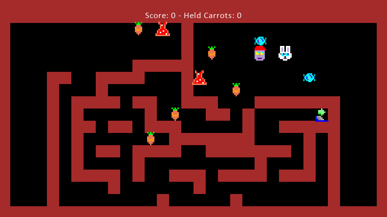

Python Arcade Review
TL;DR
- Arcade is a wonderfully documented library, that has a very clear idea of it’s audience and provides delightful resources to support them.
- Concrete examples help first time readers orientate themselves.
- Using Arcade I made a simple 2D game: Rabbit Herder for fun, and to learn a simple library for drawing primitive shapes - squares, circles, etc.
- Describing your data (ie. levels and sprites) as simply as possible makes rapid iteration possible - but only if your data can be represented simply.
- Python has some implications for games development:
- Helpful: Python type system is forgiving and allows you to introduce arbitrary properties without having to specialise entities or introduce additional complexity.
- Not Helpful: The rate of updates demanded by interactive applications would be a challenge in standard Python.
Why?

Sometimes you need a break from giving computers instructions such as: “display the sum of expenses for the last month” or “download a file from this place and put it in this other place”. In an effort to escape this tedium I figured it would be a refreshing break to give the computer different instructions: “draw a square and move 5 pixel to the right every 1 second”. Additionally learning the in and outs of a Python library for drawing and animating shapes could be helpful for data visualisation purposes in the future.
At first I was tinkering with PyGame, which is fully realised framework for developing interactive applications (aka games) in Python. However despite vibrant community and active development, the supporting documentation for PyGame was ehhhhh. It’s functional, you’ll find a descriptions of what the various functions do - but not a lot of guidance on how to combine these functions together to make something greater than the sum of the parts.
This is in my opinion the cardinal sin of any documentation, not providing concrete examples of achieving something that is of general interest to the readers of your documentation. Especially when the reader is trying orientate themselves in a new strange land.
I soon discovered Arcade and after reading through it’s documentation, and more importantly the abundance of simple and to the point examples, I decided to use Arcade for making a simple 2 dimensional game.
What?

Things that went well
Numpy for grid as representation of the game state.
Given Python’s nature of loose typing, I was able to specialise my data structures where it made sense and NOT specialise where I felt it was a little too narrow.
- player_placed attribute on carrots.
Things that didn’t go well
Collision detection, I implemented my own rather than using the provided collision detection.
Things I have mixed feelings about
Managed to keep my game logic implementation completely separate from Arcade: - Had to implement mapping between my values and Arcade’s values
What should I remember going forward
Frameworks are always a trade-off, are you willing to accept the choices made for you by the framework for benefit of being able to outsource your responsbilities.